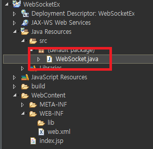
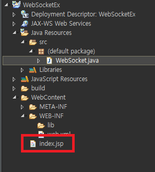
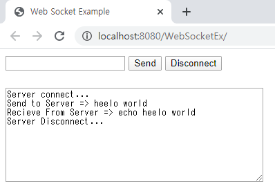
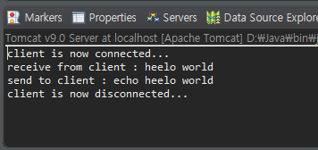

[Java] WebSocket (ウェブソケット)
こんにちは。明月です。
この投稿はJavaのServlet環境でWebSocketを使う方法に関する説明です。
普通のWeb環境はクライアントからWebサーバーにHtmlドキュメントを要請するとWebサーバは要請されたHtmlドキュメントを作成してクライアントに応答して後接続を切断する非同期ソケット通信です。
Websocketとはクライアントの要請してWebサーバが応答した後、接続を切断することじゃなく、Connectionをそのまま保持してクライアントの要請がなくてもデータを転送することが可能なプロトコールです。
例えば、チャット機能を考えば、ユーザがチャット内容を書いてサーバに転送することがあります。それはサーバにクライアントから要請することです。
でも、他のユーザがチャット内容を書いてサーバに転送すれば私の場合はサーバからデータを取得しなければならないです。
その場合はユーザから要請がなくてもサーバからクライアントにデータを転送する流れですが、既存のWebプロトコールで接続が切断する状況には転送することができないでしょう。
WebSocketの場合は接続が切断している状況じゃないので、サーバからクライアントにメッセージを転送することができます。
参考に既存の方法でも出来ないことじゃないです。Ajax(Webプロトコール)で5秒や10秒単位でメッセージ確認を要請すると可能です。
でも、頻繁な要請でWebサーバが負荷になる可能性もあるでしょう。
WebSocketはHTML5から標準になりました。プロトコール要請は「ws://~」で始まります。Webプロトコールの場合は「http://~」で始まります。
sslセキュリティタイプの場合は「wss://~」になります。
以前にJava環境でサーブレットを構築する方法に関して説明したことがあります。
link - [Java] Web serviceプログラムのServletを作成方法(Eclipse)
Web servlet環境でクラスを生成してWebSocket serverを実装しましょう。
import javax.websocket.OnClose;
import javax.websocket.OnError;
import javax.websocket.OnMessage;
import javax.websocket.OnOpen;
import javax.websocket.server.ServerEndpoint;
// WebSocketのホストアドレス設定
@ServerEndpoint("/websocket")
public class Websocket {
// WebSocket serverにブラウザ(client)が接続すれば呼ばれる関数。
@OnOpen
public void handleOpen() {
// コンソールにメッセージを出力する。
System.out.println("client is now connected...");
}
// WebSocket serverにブラウザ(client)がメッセージを転送すれば呼ばれる関数。
@OnMessage
public String handleMessage(String message) {
// コンソールに受け取ったメッセージを出力する。
System.out.println("receive from client : " + message);
// クライアントに転送するようなエコメッセージを作成する。
String replymessage = "echo "+ message;
// コンソールにエコメッセージを出力する。
System.out.println("send to client : " + replymessage);
// ブラウザにエコメッセージを転送する。
return replymessage;
}
// WebSocket serverにブラウザ(client)が切断すれば呼ばれる関数。
@OnClose
public void handleClose() {
// コンソールにメッセージを出力する。
System.out.println("client is now disconnected...");
}
// WebSocket serverにブラウザ(client)がエラーが発生すれば呼ばれる関数。
@OnError
public void handleError(Throwable t) {
// コンソールにエラーメッセージを表示する。
t.printStackTrace();
}
}

WebSocketは別に複雑ではなく簡単に実装ができます。別にソケットサーバやプロトコール宣言なども必要ないです。
ただWebSocket ホスト設定のアノテーションとWebSocketとクライアント間のイベントをアノテーションで設定可能です。
関数名は任意で作成してもよいです。
WebSocketに接続するために、jspファイルにjavascriptを実装しましょう。
<%@ page language="java" contentType="text/html; charset=UTF-8" pageEncoding="UTF-8"%>
<!DOCTYPE html>
<html>
<head><title>Web Socket Example</title></head>
<body>
<form>
<!-- 送信メッセージを作成するテキストボックス -->
<input id="textMessage" type="text">
<!-- メッセージを送信するボタン -->
<input onclick="sendMessage()" value="Send" type="button">
<!-- WebSocket終了(切断)するボタン -->
<input onclick="disconnect()" value="Disconnect" type="button">
</form>
<br />
<!-- コンソール役をするテキストアリア、受信メッセージも表示する。 -->
<textarea id="messageTextArea" rows="10" cols="50"></textarea>
<script type="text/javascript">
// 「WebSocketEx」はプロジェクト名
// 「websocket」ホスト名
// WebSocketオブジェクト生成(接続開始)
var webSocket = new WebSocket("ws://localhost:8080/WebSocketEx/websocket");
// コンソールのテキストアリア
var messageTextArea = document.getElementById("messageTextArea");
// WebSocketが接続成功になれば呼ばれる関数。
webSocket.onopen = function(message) {
// コンソールにメッセージ出力
messageTextArea.value += "Server connect...\n";
};
// WebSocketが切断なれば呼ばれる関数。
webSocket.onclose = function(message) {
// コンソールにメッセージ出力
messageTextArea.value += "Server Disconnect...\n";
};
// WebSocketからエラーが発生する時に呼ばれる関数。
webSocket.onerror = function(message) {
// コンソールにメッセージ出力
messageTextArea.value += "error...\n";
};
// WebSocketからメッセージを受け取ったら呼ばれる関数。
webSocket.onmessage = function(message) {
// コンソールにメッセージ出力
messageTextArea.value += "Recieve From Server => "+message.data+"\n";
};
// Sendボタンを押下すると呼ばれる関数。
function sendMessage() {
// 送信メッセージを作成するテキストボックスのオブジェクトを取得する。
var message = document.getElementById("textMessage");
// コンソールにメッセージを出力
messageTextArea.value += "Send to Server => "+message.value+"\n";
// WebSocketにメッセージを送信する。
webSocket.send(message.value);
// 送信メッセージを作成するテクストボックスを初期化する。
message.value = "";
}
// Disconnectボタンを押下すると呼ばれる関数。
function disconnect() {
// WebSocket切断
webSocket.close();
}
</script>
</body>
</html>

WebSocketというJavascript内部関数で宣言します。パラメータはWebSocketのアドレスを入力します。プロトコールは「ws://~」で始まります。
クライアントのリスナー関数は「onopen」、「onmessgae」、「onclose」、「onerror」があります。
「onopen」はWebSocketのサーバと接続する時に呼ばれます。「onmessage」はサーバからメッセージが受取る時に呼ばれます。
「onclose」はWebSocketのサーバと連結が切断する時に呼ばれます。「onerror」はエラーが発生する時に呼ばれます。
サーバを起動してブラウザで接続しましょう。

接続すると「Server connect...」メッセージが表示されます。
メッセージで「hello world」を送信しました。結果はサーバからエコメッセージで返事がきました。
最終にWebSocketの切断しました。

サーバ側のログをみれば接続したログがあります。クライアントから「hello world」メッセージを受け取ってエコメッセージに返事しました。
最後、WebSocketの切断ログもあります。
ここまでJavaのServlet環境でWebSocketを使う方法に関する説明でした。
ご不明なところや間違いところがあればコメントしてください。
- [Java] HttpConnectionを利用してウェブページを取得する方法2020/05/20 23:53:24
- [Java] Jsoupを利用してXMLファイル(HTML)を扱う方法2020/05/19 19:32:21
- [Java] 日付フォーマット(SimpleDateFormat)を使う方法2020/03/25 00:36:53
- [Java] サーブレット(Servlet)の環境でファイルアップロード(プログレスバーでファイルアップロード状態を表示する方法)する方法2020/03/24 00:48:21
- [Java] Spring環境でファイルアップロード(プログレスバーでファイルアップロード状態を表示する方法)する方法2020/03/22 23:15:12
- [Java] FTPに接続してファイルをダウンロード、アップロードする方法(FTPClient)2020/03/20 02:44:36
- [Java] JSPのSpring環境でschedulerのcronを使う方法2020/03/18 00:24:32
- [Java] POIを利用してExcelを扱う方法2020/03/17 01:48:00
- [Java] PDFを出力する方法(itextpdf)2020/03/13 00:47:31
- [Java] ログライブラリ(log4j)を使う方法2020/03/12 00:54:39
- [Java] Jsonタイプのデータを使う方法(Gsonライブラリ)2020/03/11 00:30:15
- [Java] Base64をエンコード、デコードする方法2020/03/09 10:24:01
- [Java] cmdコマンドを実行するための方法2020/03/06 18:01:10
- [Java] メール(javax.mail)を発送する方法2020/03/05 20:07:49
- [Java] クラス複製(Clonable, Reflection)2020/03/05 00:03:19
- [Python] 12. クラス(Class)を使う方法2020/06/10 19:33:33
- [Python] 11. デコレーター（Decorator）を使う方法2020/06/09 17:27:18
- [Python] 10. モジュールとパッケージ(import)2020/06/08 19:07:50
- [Python] 09. 例外処理する方法2020/06/05 17:11:47
- [Python] 08. ジェネレータ(Generator)2020/06/04 18:46:08
- [Python] 07. globalとnonlocal2020/06/03 20:34:49
- [Python] 06. 関数(function) - インライン関数、callbak、ラムダ(lambda)そしてクロージャ2020/06/02 20:51:22
- [Python] 05. コンプリヘンション(Comprehension)を使用する方法2020/06/01 19:38:58
- [Python] 04. 制御文(if, while, for, break, continue)とインデント2020/05/29 21:09:08
- [Python] 03. Pythonでリスト(list)とタプル(tuple)、そしてディクショナリ(dictionary)、セット(set)2020/05/27 18:49:08
- [Python] 02. データタイプ、変数宣言そしてコメントする方法2020/05/26 18:16:52
- [Python] 01. Python3をインストールする方法(Anacondaインストール)2020/05/25 19:02:44
- [Java] HttpConnectionを利用してウェブページを取得する方法2020/05/20 23:53:24
- [Java] Jsoupを利用してXMLファイル(HTML)を扱う方法2020/05/19 19:32:21
- [C#] 非同期ソケット通信(IOCP)-APMパターン2020/05/18 18:45:37